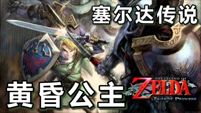

游戏
塞尔达传说之黄昏公主
《塞尔达传说 黄昏公主》（ゼルダの伝说 トワイライトプリンセス，The Legend of Zelda: Twilight Princess）是由任天堂情报开发本部制作、任天堂发行的动作冒险游戏。2006年11月9日首发登陆Wii和NGC，Wii首发作品。双平台合计销量达到885万套以上，是系列目前为止销量最高作。《塞尔达传说：黄昏公主HD》2016年3月10日登陆WiiU平台。

塞尔达传说之黄昏公主
《塞尔达传说 黄昏公主》（ゼルダの伝说 トワイライトプリンセス，The Legend of Zelda: Twilight Princess）是由任天堂情报开发本部制作、任天堂发行的动作冒险游戏。2006年11月9日首发登陆Wii和NGC，Wii首发作品。双平台合计销量达到885万套以上，是系列目前为止销量最高作。《塞尔达传说：黄昏公主HD》2016年3月10日登陆WiiU平台。
讨鬼传2
《讨鬼传2》是由KOEI TECMO公司开发的一款动作游戏，于2016年7月28日发行。在吸收了《讨鬼传》优势内容的基础上，增加了诸多提升游戏爽快度的要素。游戏风格也转变成为开放世界形式，且能无缝进入战斗。